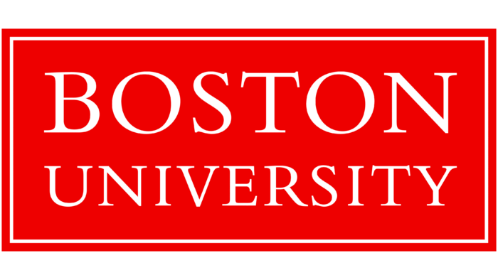

Education

Boston University
Degree: Bachelor of Arts in Computer Science
Duration: September 2022 – May 2025 (Expected)
Description: At Boston University, I have pivoted towards focusing on algorithms, data structures, and software engineering while also exploring areas like artificial intelligence and machine learning.
Rochester Institute of Technology
Degree: Bachelor of Science in Computer Engineering
Duration: August 2021 – May 2022 (Transferred)
Description: During my time at RIT, I gained hands-on experience in circuit design. This foundational knowledge in engineering has enriched my understanding of hardware-software integration in computing.
Relevant Coursework
- Data Structures and Algorithms
- Data Science Tools and Applications
- Software Engineering
- Fullstack Development
- Digital System Design
- Databases